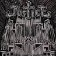
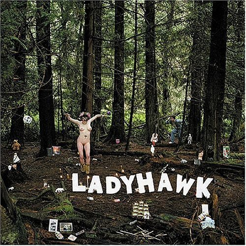
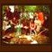
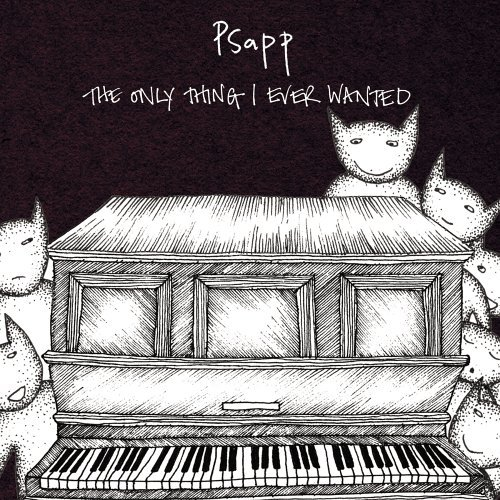
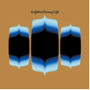
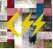
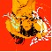

|  |
15 |
Justice Waters Of Nazareth EP
“’Waters of Nazareth’ is the loudest pop-metal single of the year--it just happened to be made on a couple of synthesizers by a pair of club rats.”
http://www.citypaper.com/music/recordreview.asp?id=10560 |
 |
14 |
Oneida Happy New Year
“Happy New Year is a virtual summation of Oneida’s first decade, from the disco beat and jabbing guitar and organ of ‘Up With People,’ the triumphal relentlessness of ‘The Adversary’ and the Minimalist pulse of ‘The Misfit’ to the acoustic delicacy of ‘Reckoning’ and ‘Busy Little Bee.’ The album is a perfect introduction for latecomers to this essential New York band.”
http://www.nytimes.com/2006/07/17/arts/music/17choi.html?ex=1155355200&en=ad049cc7e41630b5&ei=5070
|
 |
13 |
The Walkmen A Hundred Miles Off
“The Walkmen careen through 12 songs that frequently devolve into sound-swallowing echo and boozy bellow, until the whole album becomes one long, moody abstraction.”
http://www.avclub.com/content/node/48804 |
 |
12 |
Animal Hospital
“Animal Hospital is one man, dwarfed by his stuff. His modus operandi is to play effects-heavy guitar and light drums, and loop and loop and loop. He layers his loops very deeply, so the songs can become quite complex, but it's all very quiet, contemplative, and slowly evolving.”
http://www.apocalypse.org/~steve/shows/2005/043005.html |
 |
11 |
Acid Mothers Temple & the Melting Paraiso U.F.O. Have You Seen the Other Side of the Sky?
“Not only is this album a welcome return to form, but also some of the tracks exceed this incarnation’s past accomplishments, rivaling their past output with stylistic variations that haven’t been heard in years.”
http://www.brainwashed.com/index.php?option=com_content&task=view&id=4931&Itemid=64 |
|  |
10 |
Ladyhawk
“Ladyhawk exist because Creedence Clearwater Revival don't anymore. They exist because playing loud fuzzed up rock music with your friends is way more fun than shuffling numbers from column to column in a grey office job.” read our review
http://www.playlouder.com/review/+ladyhawk/ |
|  |
9 |
Feathers
“Feathers' music is not so much songs as gentle, enveloping clouds, jangling with strummed string instruments and punctuated by bongo slaps, sung in many different voices and following a wandering, flower-strewn path through rural utopias.”
http://neumu.net/fortyfour/2006/2006-00072/2006-00072_fortyfour.shtml |
|  |
8 |
Psapp The Only Thing I Ever Wanted
“The Only Thing I Ever Wanted is a true album, a coherent trail of interlinked melody and domestic adventures. Like the Books, Psapp meld acoustic sounds into tales of modern life, like Tunng there is a sense of mystery and intrigue imbued into each echo.” read our review
http://www.drownedinsound.com/release/view/7533 |
|  |
7 |
Brightblack Morning Light
“Brightblack Morning Light offers a clear-cut differentiation between run-of-the-mill indie-rock bar bands hiding out in folksy wardrobes and those doing something nuanced and complex.” read our review
http://www.pitchforkmedia.com/article/record_review/37087/Brightblack_Morning_Light_Brightblack_Morning_Light |
 |
6 |
The Ice Cream Socialists Belles & Missiles
“Six eclectic… college kids making kaleidoscopic pop with nerdy lead vocals, harmonizing backing vox, accordions, keyboards, violins and more.”
http://flagpole.dreamhosters.com/ABC/2006-04-26 |
 |
5 |
Camera Obscura Let’s Get Out of This Country
“Stepping fully out of the shadow of their onetime patrons Belle & Sebastian, the group has composed and performed an album that is comparable to B&S' best and ranks with the best indie pop albums ever.”
http://www.allmusic.com/cg/amg.dll?p=amg&token=ADFEAEE47B16D84DAD7F20CE932C4BC7947EF71DDF40E8870
A29491BDFBA3C54D95B79EF45FA8781B7E573AB7BAFFF28E85905D2CFE453FFCC0640&sql=10:58jieau84x87~T1 |
|  |
4 |
CSS Cansei de Ser Sexy
“A jubilant mix of electro, rock, and smatterings of various other styles ranging from dance to punk, CSS's music is almost immediately infectious and surprisingly poppy.”
http://www.tinymixtapes.com/musicreviews/c/css.htm |
 |
3 |
The Knife Silent Shout
“Nearly everything on the record sounds eerie and unnerving, if not outright malevolent. Imagine chopped and screwed Siouxie and the Banshees or Throbbing Gristle's "Hamburger Lady" reworked for a goth disco, and you're about halfway to the general feel of the record.”
http://www.fluxblog.org/2006/01/my-god-how-beautiful-knife-we-share.html |
|  |
2 |
Asobi Seksu Citrus
“Citrus is so accomplished, refined, and downright transcendent that it could very well stand alongside Loveless as a modernized shoegaze staple. Don’t overlook it, lest you become one of those old codgers who think that nostalgia for Loveless days still has an excuse.”
http://www.cokemachineglow.com/reviews/asobi_citrus2006.html |
 |
1 |
Sonic Youth Rather Ripped
“This is their radio-rock record, and it's not a tribute, it's as close to the real thing as they've come since they actually had a chance at radio play back in the '90s. And it's certainly not just any other Youth record; it flexes muscles most of us thought had atrophied in them long ago, if they ever had them at all. Best of all, it's plain and obvious that they're having real, no-bullshit, total fun all over the place, and it's infectious.”
http://www.stylusmagazine.com/reviews/sonic-youth/rather-ripped.htm |